Salesforce CRM Capstone Project
AI-Powered Appointment Management Assistant
An appointment management solution built on Salesforce that automates the scheduling, rescheduling, and cancellation of customer appointments — with reusable Flows, a working Screen Flow booking interface, a Lightning App, and live reports & dashboards.
Data Model
Custom object Appointment (Record Name = Auto Number APT-{00000})
| Field | Type |
|---|---|
| Appointment Number | Auto Number — APT-{00000} (Record Name) |
| Contact (Customer) | Lookup → Contact |
| Appointment Date/Time | Date/Time |
| Status | Picklist — Scheduled · Rescheduled · Completed · Cancelled |
| Service Type | Picklist — Consultation · Follow-up · Support · Other |
| Notes | Long Text Area |
Automation — Autolaunched Flows
All flows are Active and agent-ready.
Create Appointment
Inputs: Contact Id, Date/Time, Service Type
Creates a record and returns the Appointment Id.
Reschedule Appointment
Inputs: Appointment Id, New Date/Time
Updates the date and sets Status = Rescheduled.
Cancel Appointment
Input: Appointment Id
Sets Status = Cancelled.
Screen Flow — Booking Interface
"Book Appointment Screen" (Active) collects Date/Time and Service Type from the user and creates the appointment record on submission. It serves as a real, user-facing booking front-end and a working alternative to the conversational AI agent.
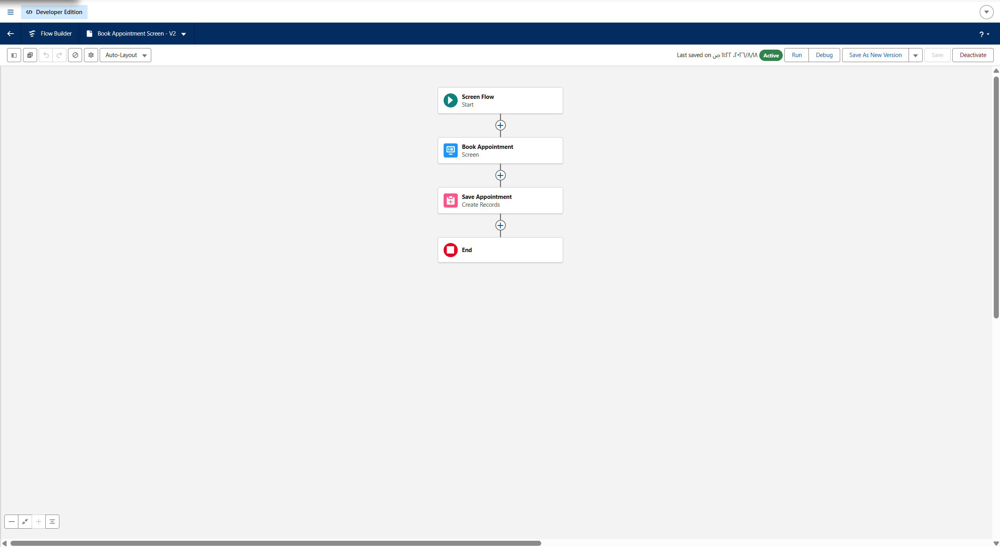
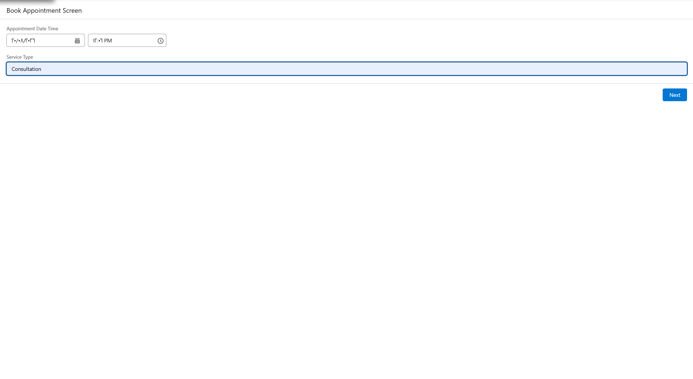
Lightning App
"Appointment Management" Lightning App with tabs: Appointments, Contacts, Reports, Dashboards. Includes a custom tab for the Appointment object and is assigned to the System Administrator profile.
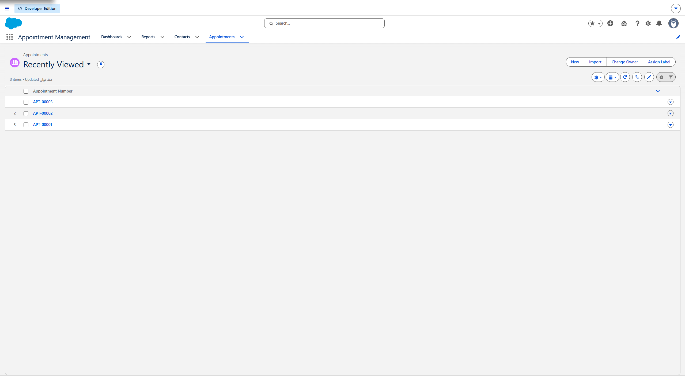
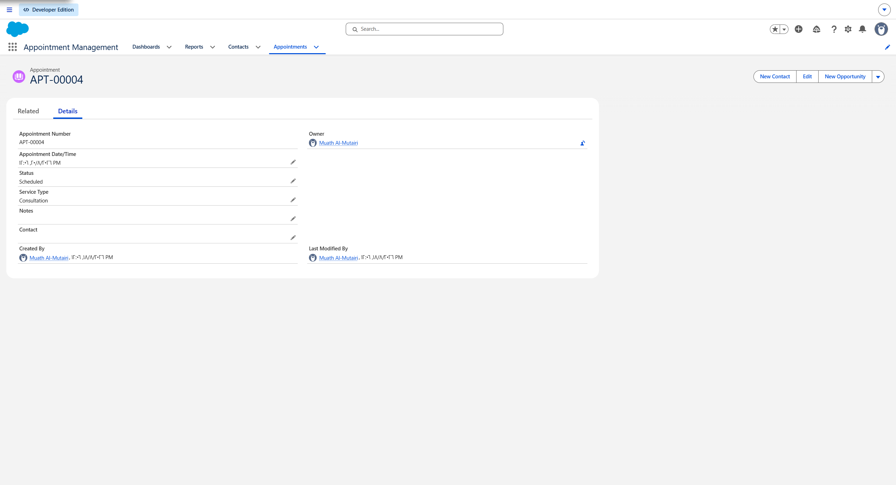
Reports & Dashboard
Report
"Appointments by Status" (Custom Report Type "Appointments Report") — grouped by Status with a chart.
Dashboard
"Appointments Dashboard" visualizing the data.
Agentforce & Conversational AI — Honest Status
Agentforce was part of the architecture from the start. Activation was
constrained by the Developer Edition org (missing tenant configuration
and licensing); "Agentforce Agents" returned "No matching items found"
in Setup. Mitigation: the Flows were built as agent-ready
actions, a fully working Screen Flow was delivered as a non-conversational
booking interface, and a real, Active Einstein Bot named
"Appointment Assistant" was built as the working conversational
substitute. Its three dialogs — Schedule, Reschedule, and
Cancel an appointment — look up the customer's real Contact and
Appointment records and call the exact same
Create_Appointment / Reschedule_Appointment /
Cancel_Appointment Flows used everywhere else in this repo,
so nothing about the automation is duplicated or faked. Everything
specified in docs/AGENTFORCE.md is
ready to rebuild as native Agentforce topics and actions, unchanged,
the moment licensing is enabled — see §7 there for the full detail.
Screenshots
Visual evidence — click any image to enlarge.
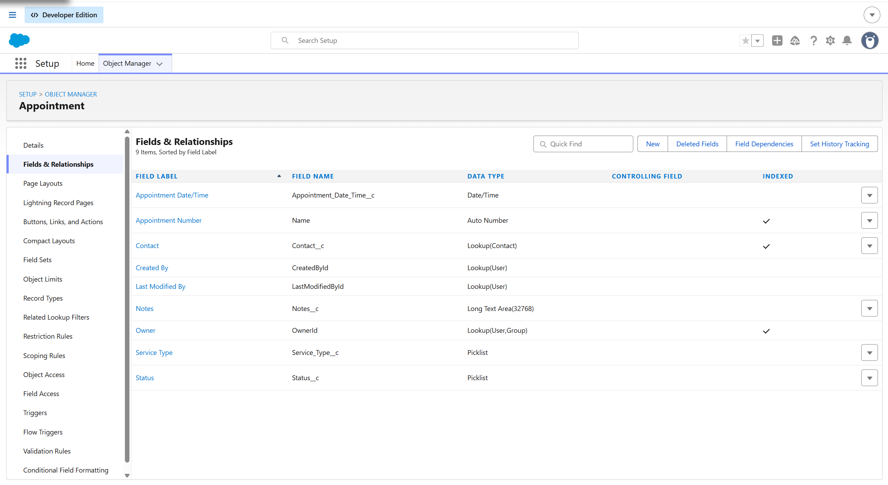
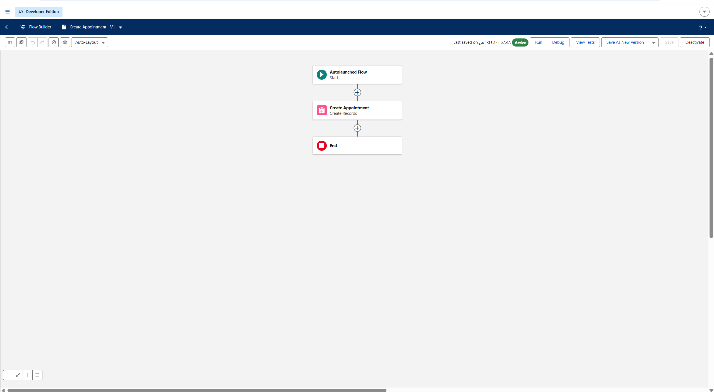
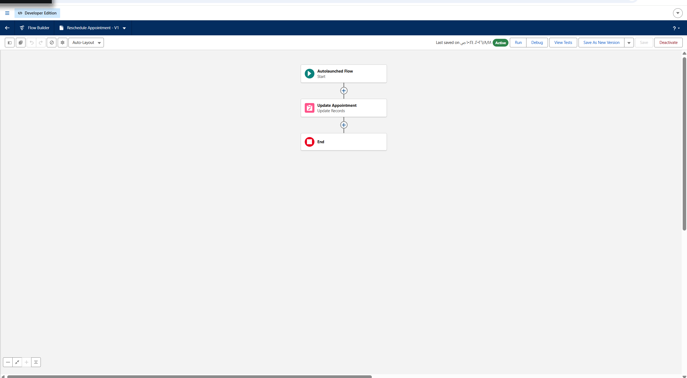
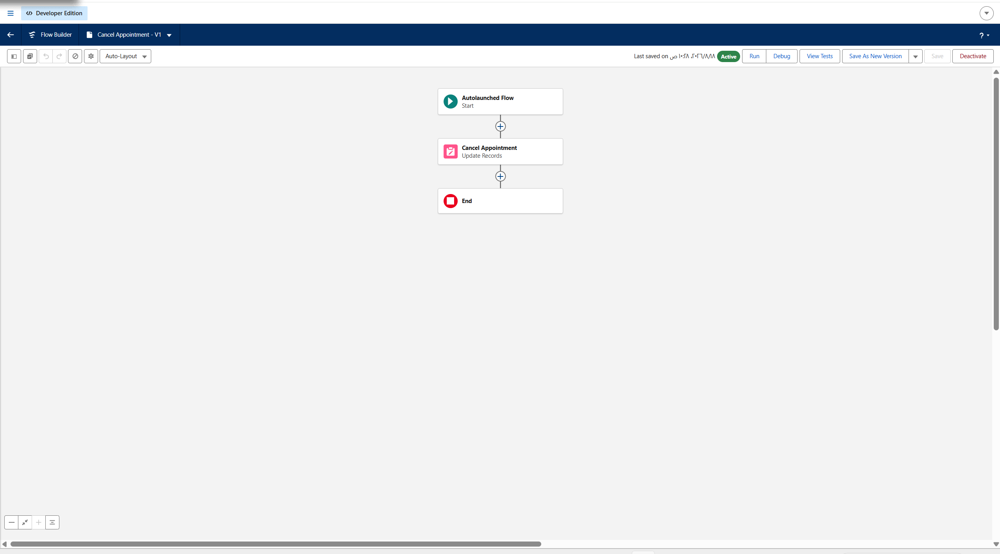
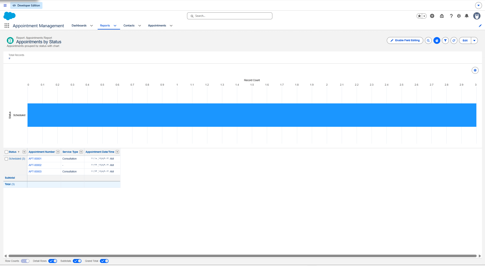
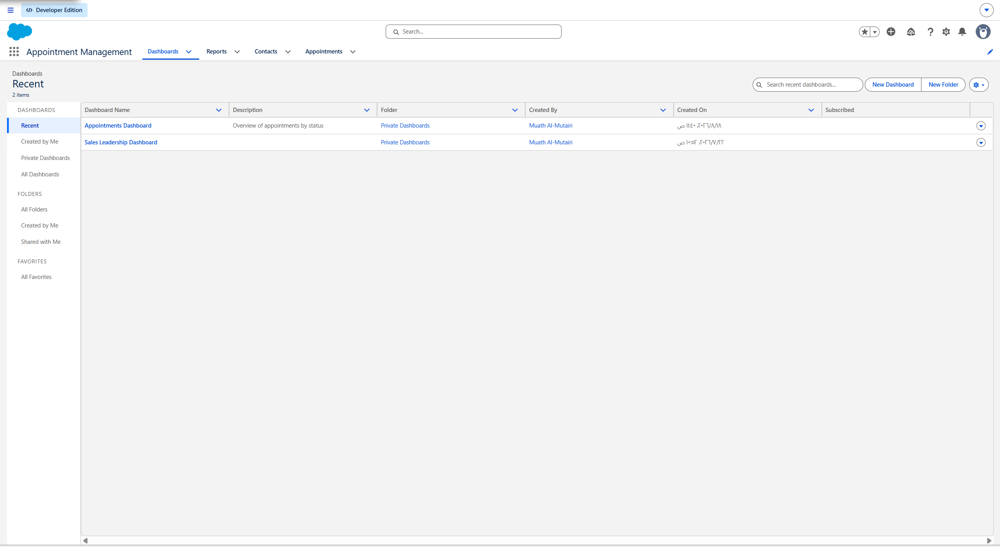
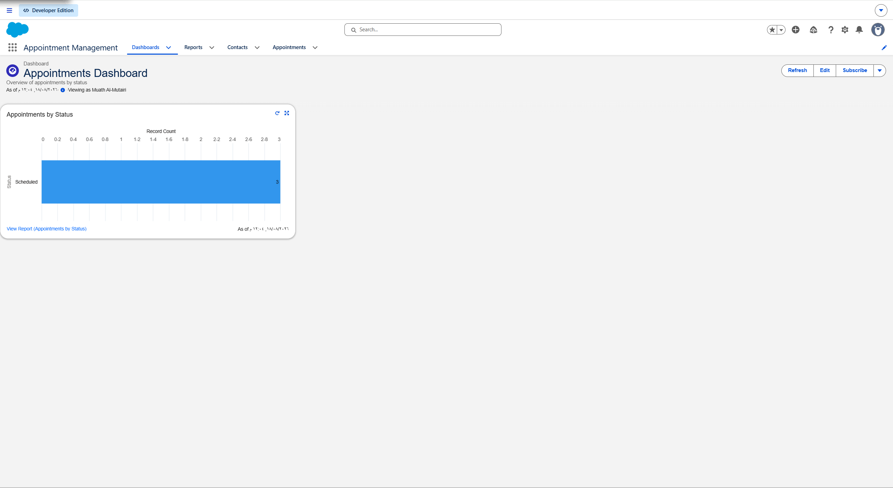
Documentation & Presentation
Full write-up and final capstone deck.